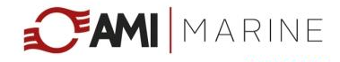

Surveys

MCTEC PRO INC - certified by several (S)VDR manufacturers to perform Annual performance test (APTs) in accordance with SOLAS requirements and Annual GMDSS Radio surveys on behalf of DNV-GL, LR and ABS Class. We are also able to perform Annual Gyro Overhauling, services and repairs for most Gyrocompasses brands. Last but not least, we provide magnetic compass calibrations through our subcontractors.
VDR surveys for:
- MACGREGOR: MER (S)VDR, VDR G4, VDR G4e
- AMI MARINE: VDR VR2272BVDR/SVDR , X VDR , X2 VDR
- DANELEC MARINE: DM100, DM200, DM300, DM400, DM500 DM700 and DM800
- Beijing HIGHLANDER: VDR HLD-A2/HLD-S, HLD-B2/S2
Services

MCTEC PRO INC - Service company which can provide inspection, repairs and spare parts for Marine Communication & Navigation Systems like Radars, AIS, EPIRB, SART, SSAS, BNWAS, MF/HF, INMARSAT-C, portable UHF/VHF, fixed VHF, FBB, VSAT, GYROCOMPASS, ECHOSOUNDER, SPEEDLOG etc.
At the same time we can provide services for VDR having train technicians for:
- MAGREGOR (Interschalt,Avecs): MER (S)VDR, VDR G4, VDR G4e
- AMI MARINE: VDR VR2272BVDR/SVDR , X VDR , X2 VDR
- DANELEC MARINE: DM100, DM200, DM300, DM400, DM500, DM700 and DM800, ECDIS G2 and DANELEC CONNECT
- Beijing HIGHLANDER: VDR HLD-A2/HLD-S, HLD-B2/S2
- SAMSUNG: VDR SVDR, SVDR-Pro, SVDR-3000
- SEAS OF SOLUTION (OROLIA,NETWAVE,RUTTER): VDR 100G2/G2S,VDR100G3, NW4000, NW6000
Electrical & Automation

We are also able to supply, implement and commission hardware and software for automation systems.
Through our joint venture we can provide marine propulsion fuel optimizing system which can reach even more than 20% fuel savings.
We can provide inspection - Megger Test , repairs and spare parts for electrical system
Partners
|
>
MACGREGOR - INTERSCHALT
|
>
AMI MARINE
|
>
DANELEC MARINE
|
Contact
Email: info@mctec.ca